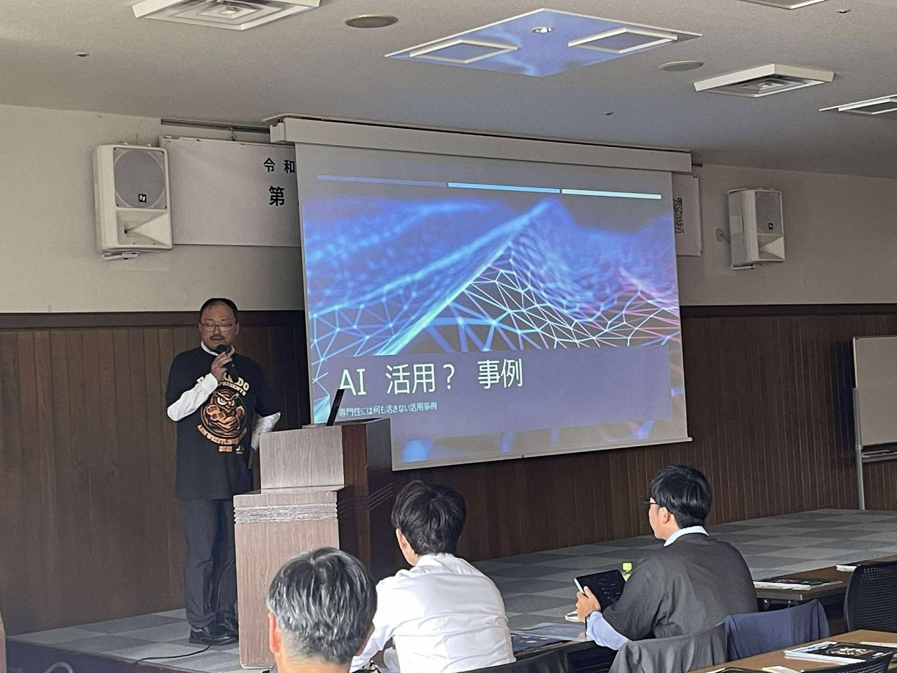

研修・セミナー
現場で使える計測技術を、実機を使って少人数で学ぶ研修を全国で開いています。
次回の研修
次回の研修は準備中です。
お申込みはこのサイトで受け付け、参加費（懇親会費を含む）はお申込みの際にクレジットカード等でお支払いいただきます。お支払いが済むと、領収書（PDF）がメールで届きます。
講師のご依頼
土地家屋調査士会・青年会などの研修に、研究所の理事が講師として伺います。日程・テーマ・人数を お問い合わせ からお知らせください。

これまでの研修
- 不動産調査技術研究所 第1回技術研修会。パネル討論（第1部「過去」・第2部「技術」）と、会場からの投稿をもとに話す参加型の企画「導入してよかったツール」。
- DrogRTK360 操作セミナー（兵庫・宝塚、20名）。主催：土地家屋調査士法人藤井十章事務所。研究所が協賛。
- Drogger GNSS 1DAY 実践研修会（福岡・博多）。RTK-GNSS の補正情報配信（VRS と RRS の違い）、GNSS と SLAM による三次元データを用いた筆界検討、現地でのフィールドワーク。
- Drogger RWG 勉強会（東京・両国、12名）。軽量 GNSS 受信機の設定を、使い慣れたメンバーと一緒に少人数で学ぶ形で3時間。